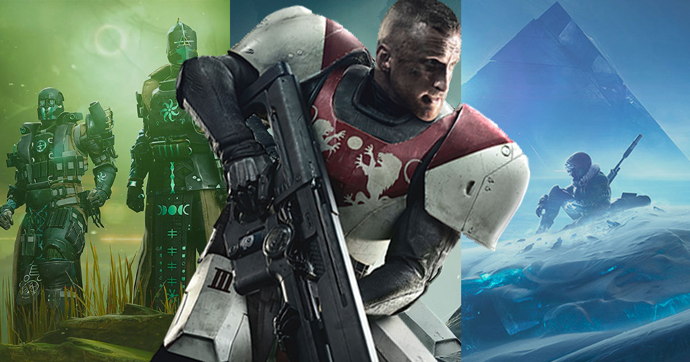
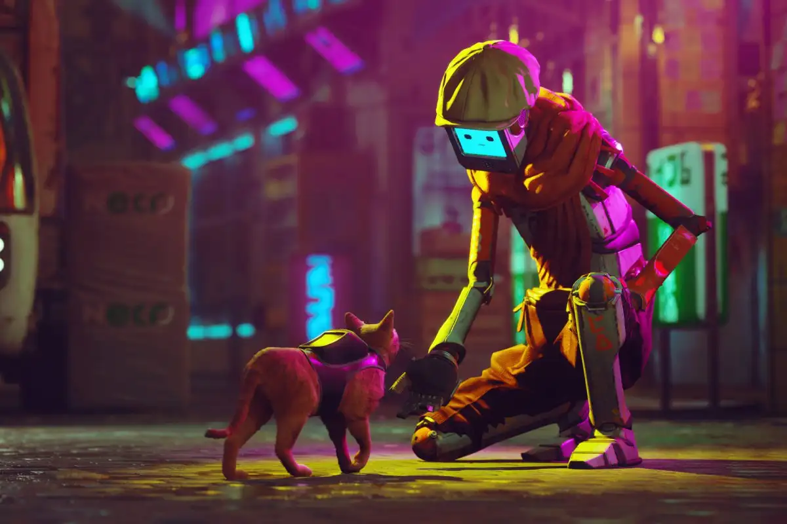

TOP 15 GAMES OF 2022 THAT YOU MUST TRY
Video games have been around for decades, but their popularity has increased in recent years. 2022 was definetly a year of video games. The video game sector is larger than the movie and music industries combined. Due to the restrictions and lockdown imposed by Covid 19, there were online schools and work-from-home and the growing popularity of digital payment contributed to increasing demand for online gaming. The gaming sector industry experienced growth resulting in an increase in investments to meet the demand. Here are the top 15 video games of 2022 that you should try atleast once.
15. DESTINY 2
 Destiny 2 is a free-to-play online first-person shooter video game developed by Bungie. It was originally released as a pay to play game in 2017 for PlayStation 4, Xbox One, and Windows. It became free-to-play, utilizing the games as a service model, under the New Light title on October 1, 2019, followed by the game's release on Stadia the following month, and then PlayStation 5 and Xbox Series X/S platforms in December 2020. The game was published by Activision until December 31, 2018, when Bungie acquired the publishing rights to the franchise. It is the sequel to 2014's Destiny and its subsequent expansions
Destiny 2 is available on PlayStation 4 Xbox One Windows Stadia PlayStation 5 Xbox Series X/S and is a free-to-play online first-person shooter video game developed by Bungie.
IMDB rating:
14. APEX LEGENDS

Apex Legends is a free-to-play battle royale-hero shooter game developed by Respawn Entertainment and published by Electronic Arts. The game supports cross-platform play, excluding the aforementioned mobile platforms.
Before the match, players form into two- or three-player squads, and select from pre-designed characters with distinctive abilities, known as "Legends". The game has two gameplay modes. In "Battle Royale", up to 20 three-person squads or 30 two-person duos land on an island and search for weapons and supplies before attempting to defeat all other players in combat. The available play area on the island shrinks over time, forcing players to keep moving or else find themselves outside the play area which can be fatal. The final team alive wins the round. In "Arenas", players form into three-player squads and fight against another squad in a 3v3 team deathmatch over a series of rounds to determine the winner of the match. Teams win when their team has at least 3 points and is 2 points ahead.
It was released for PlayStation 4, Windows, and Xbox One in February 2019, for Nintendo Switch in March 2021, and for PlayStation 5 and Xbox Series X/S in March 2022. A mobile version of the game designed for touchscreens titled Apex Legends Mobile was released in May 2022 on Android and iOS.
IMDB rating:
13. FORTNITE

Fortnite is an online video game developed by Epic Games and released in 2017. It is available in three distinct game mode versions that otherwise share the same general gameplay and game engine: Fortnite Battle Royale, a free-to-play battle royale game in which up to 100 players fight to be the last person standing; Fortnite: Save the World, a cooperative hybrid tower defense-shooter and survival game in which up to four players fight off zombie-like creatures and defend objects with traps and fortifications they can build; and Fortnite Creative, in which players are given complete freedom to create worlds and battle arenas.
Fortnite is free, and available on a huge range of devices - Playstation 4, Nintendo Switch, XBox One, PC, Mac, iOS and some Android devices too.
IMDB rating:
12. VICTORIA 3

The grand strategy titans of Paradox Interactive tend to stick with antiquity in their games. Crusader Kings and Europa Universalis are both set in the High Middle Ages — an age of kings and regents — where swaths of territory can change hands with a severed bloodline. But Victoria 3 shifts the parameters to the 19th century, where the stakes are a tad more relatable. You are given the controls of the commodity market at the dawn of globalization: managing an economy, organizing trade routes, and charting the political future of your people. Will you plunge the United States into socialist revolution? Grind the East India Trading Company to a halt? Reverse the forces of colonization in the heart of Africa? Victoria 3 gives us the world. Results may vary.
Victoria 3 was launched for PC via Steam and Microsoft Store on October 25 2022 for ₹4,091.46, publisher Paradox Interactive and developer Paradox Development Studio announced. It is also available via Xbox Game Pass for PC. The game is available in standard and “Grand” editions.
IMDB rating:
11. VALORANT

Valorant is a free-to-play first-person tactical hero shooter developed and published by Riot Games, for Windows. Teased under the codename Project A in October 2019, the game began a closed beta period with limited access on April 7, 2020, followed by a release on June 2, 2020. The development of the game started in 2014. Valorant takes inspiration from the Counter-Strike series of tactical shooters, borrowing several mechanics such as the buy menu, spray patterns, and inaccuracy while moving.
There are mainly 6 game modes- Unrated, Competitive, Swiftplay, Spike Rush, Escalation and Replication. There is also one additional mode called Snowball Fight which is available only durning Christmas season. There are a large variety of playable agents available in the game. Agents are divided into 4 roles: Duelists, Sentinels, Initiators, and Controllers. Each agent has a different role which indicates how the agent is usually played.
Marvel Snap was published by Nuverse for Android, iOS, macOS, and Windows. The Marvel Snap card game is a free-to-play game, open for all Marvel fans and gamers. Although, you may purchase some cosmetics and such in the in-game store if you would like to.
IMDB rating:
10. GENSHIN IMPACT

Genshin Impact is an action role-playing game developed and published by miHoYo. he game features an anime-style open-world environment and an action-based battle system using elemental magic and character-switching. The game is free-to-play and is monetized through gacha game mechanics through which players can obtain new characters and weapons. The base game is expanded regularly through patches using the games as a service model.
Genshin Impact takes place in the fantasy world of Teyvat, home to seven nations, each of which is tied to a different element and ruled by a different god. The story follows the Traveler, who has traveled across countless worlds with their twin sibling before becoming separated in Teyvat. The Traveler travels in search of the lost sibling with their companion Paimon and becomes involved in the affairs of Teyvat's nations.
Genshin Impact was released for Android, iOS, PlayStation 4, and Windows in 2020, on PlayStation 5 in 2021, and is set for release on Nintendo Switch.
IMDB rating:
9. DISNEY DREAMLIGHT VALLEY

Disney Dreamlight Valley is a life simulation adventure game developed by Gameloft Montreal and published by Gameloft. The game has players tend to a magical valley populated by various Disney and Pixar characters who previously underwent a curse that caused them to lose their memories of their lives in the valley.
Disney Dreamlight Valley takes place in the titular "Dreamlight Valley", a magical valley with various biomes populated by Disney and Pixar characters. The game features nonlinear gameplay similar to Nintendo's Animal Crossing games where players take control of a customizable human player character living in the valley. The valley is synced to real time based on the time set on the player's console or computer.
The game was released in early access for Nintendo Switch, PlayStation 4, PlayStation 5, Windows, Xbox One, and Xbox Series X/S on September 6, 2022, while the macOS version released in early access on December 6, 2022, alongside the game's second content update.While payment for a "Founder's Pack" or an Xbox Game Pass subscription is needed to play the game in early access, it will be fully released as a free-to-play game in 2023
IMDB rating:
8. MARIO + RABBIDS SPARKS OF HOPE

Mario + Rabbids Sparks of Hope is a 2022 action-adventure turn-based strategy video game developed by Ubisoft Milan and Ubisoft Paris and published by Ubisoft for the Nintendo Switch. The game is a crossover between Nintendo's Mario and Ubisoft's Rabbids franchises and is a sequel to Mario + Rabbids Kingdom Battle (August 29, 2017). It was released worldwide on October 20, 2022. Three downloadable content expansions are also in development, one featuring Rayman.
Sparks of Hope received generally positive reviews from critics, with praise towards the game's graphics, soundtrack, gameplay, and improvements to the battle system, though the loading times received some criticism. According to Ubisoft, the game underperformed commercially.
Mario + Rabbids Sparks of Hope is available on Nintendo Switch. Players can connect to the Nintendo eShop and download the Mario + Rabbids Sparks of Hope Demo for free. Mario + Rabbids Sparks of Hope price in India starts from ₹ 3,799. The lowest price of Mario + Rabbids Sparks of Hope is ₹ 3,799 at Amazon.
IMDB rating:
7. MARVEL SNAP

Marvel Snap is a digital collectible card game developed by Second Dinner. The game features a collection of different characters from the Marvel Universe. The game was released on October 18, 2022, after a period of beta testing.Players each have a deck of 12 cards. Each card depicts a Marvel character with cost, power level, and potentially a special ability. At the start of each round, players simultaneously put one card or more face down on one of three locations. Locations are randomly assigned for each match, and each location has a unique effect. At the end of each round cards are revealed and special abilities of cards trigger. Whoever has the highest power at a given location wins that location. The goal of the game is to win two out of the three locations. The game usually lasts six rounds, each of them giving an increasing "energy" to play more powerful cards.
Marvel Snap was published by Nuverse for Android, iOS, macOS, and Windows. The Marvel Snap card game is a free-to-play game, open for all Marvel fans and gamers. Although, you may purchase some cosmetics and such in the in-game store if you would like to.
IMDB rating:
6. STRAY
 Stray is a 2022 adventure game developed by BlueTwelve Studio and published by Annapurna Interactive. The story follows a stray cat who falls into a walled city populated by robots, machines, and mutant bacteria, and sets out to return to the surface with the help of a drone companion, B-12. The game is presented through a third-person perspective. The player traverses the game world by leaping across platforms and climbing up obstacles, and can interact with the environment to open new paths. Using B-12, they can store items found throughout the world and hack into technology to solve puzzles. Throughout the game, the player must evade the antagonistic Zurks and Sentinels, which attempt to kill them.
Stray is currently available on PlayStation 4, PlayStation 5, and PC via Steam. Although Stray is not a free game as is, there may be a few ways for players to at least get a taste of the game without having to pay the standard price for it. You will be charged after the initial seven days unless you cancel the membership before then. PS Plus Extra costs ₹1,117 per month, while PS Plus Premium costs ₹1,371 per month.
IMDB rating:
5. POKÉMON LEGENDS: ARCEUS

Pokémon Legends: Arceus is an action role-playing game developed by Game Freak and published by Nintendo and The Pokémon Company for the Nintendo Switch. It is part of the eighth generation of the Pokémon video game series and serves as a prequel to Pokémon Diamond and Pearl (2006). The game was first announced as part of the Pokémon 25th Anniversary event in February 2021, and was released worldwide on January 28, 2022.
The game follows the protagonist, sent back through time, as they travel through the Hisui region based on the island of Hokkaido during early Japanese colonization. Centered around exploration of the region's several open areas populated with Pokémon, the game's objective is to complete a roster of the region's Pokémon, known as the Pokédex. Pokémon Legends: Arceus was a commercial success, having sold over 13.91 million copies by September 30, 2022. Pokemon Legends: Arceus was a critical success, receiving generally favourable reviews, and being nominated for several end of the year awards, including Best RPG at The Game Awards.
Pokémon Legends: Arceus is available on Nintendo Switch. It is available on Mx2games.com starting from ₹3599
IMDB rating:
4. MINECRAFT

Minecraft is a sandbox game developed by Mojang Studios. The game was created by Markus "Notch" Persson in the Java programming language. Following several early private testing versions, it was first made public in May 2009 before being fully released in November 2011, with Notch stepping down and Jens "Jeb" Bergensten taking over development. Minecraft is the best-selling video game in history, with over 238 million copies sold and nearly 140 million monthly active players as of 2021 and has been ported to several platforms.
In Minecraft, players explore a blocky, procedurally generated, three-dimensional world with virtually infinite terrain and may discover and extract raw materials, craft tools and items, and build structures, earthworks, and machines.
Minecraft is available on- Xbox One, Xbox 360,
Nintendo Switch,
PlayStations,
Android Phones,
iOS,
Windows PC,
Wii U,
Nintendo 3DS, Mac and Linux
IMDB rating:
3. ROBLOX

Roblox is an online game platform and game creation system developed by Roblox Corporation that allows users to program games and play games created by other users. Created by David Baszucki and Erik Cassel in 2004 and released in 2006, the platform hosts user-created games of multiple genres coded in the programming language Lua. For most of Roblox's history, it was relatively small, both as a platform and as a company. Roblox began to grow rapidly in the second half of the 2010s, and this growth has been accelerated by the COVID-19 pandemic.
Roblox is available across many platforms, including mobile, PC, Xbox, Mac, and Fire OS, and there's no doubt that this cross-platform accessibility is a significant reason why Roblox has surged in popularity. Although the Roblox is a free game to play, children are incentivised to make purchases in the game with real money. Kids can purchase Robux for cash which is then spent on equipment and outfits in the games.
IMDB rating:
2. NEON WHITE

Neon White is a first-person shooter and puzzle-platforming game developed by Angel Matrix and published by Annapurna Interactive. Designed to focus on speedrun-style of gameplay, Neon White has the player in the role of a Neon, a demon hunter in heaven, clearing all the demons on a given level in the fastest time possible. The game uses playing cards that represent weapons which can be discarded to perform special moves like double-jumping. The game was written by Ryann Shannon, writer for OK K.O.! Let's Be Heroes and Aevee Bee, writer for We Know the Devil.
The game was released for Microsoft Windows and the Nintendo Switch on June 16, 2022 and is available for free. It was released on PlayStation 4 and PlayStation 5 on December 13, 2022
IMDB rating:
1. ELDEN RING

If you recall the decaying gothic ramparts in Dark Souls, or the condemned Victorian hell of Bloodborne, then you already know that when FromSoftware is at its best, the studio creates some of the most iconic settings you’ll ever find in a video game. Elden Ring expanded on From’s tried-and-true formula — a dense, clockwork universe packed with furtive secrets and ecclesiastic lore — into, perhaps, the largest world ever rendered on a console. The Lands Between, where Elden Ring takes place, encompasses about 30 square miles of digital real estate. It takes a player three and a half hours to walk across its diameter, and they’ll find 157 unique boss fights across innumerable dungeons, alcoves, and temples along the way. FromSoftware took no shortcuts; every inch of this forsaken realm is authored and intentional, operating with a euphoric indifference toward the player. Will you find all of its secrets? Elden Ring could care less. You can play for hours before discovering a nondescript marble elevator that sinks down to a verdant underground river coursing, eternally, below our feet. The world map pleats open, revealing even more for us to chew on. Elden Ring's scale is a singular achievement.
Elden Ring can be played on wPlayStation 4, PlayStation 5, Windows, Xbox One, and Xbox Series X/S. However Elden Ring is not a free game and its standard price is ₹4,909.91.
IMDB rating: